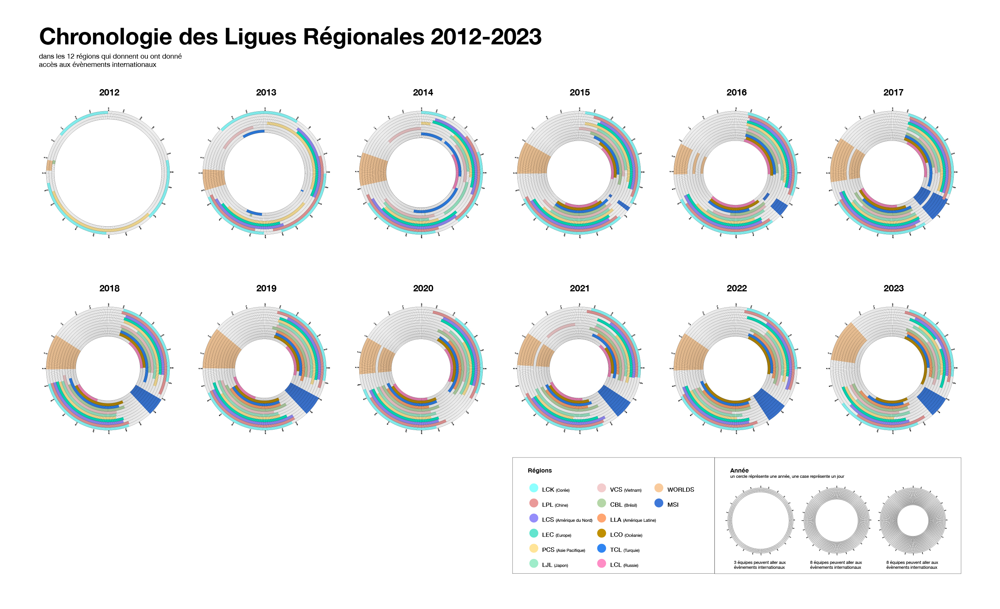
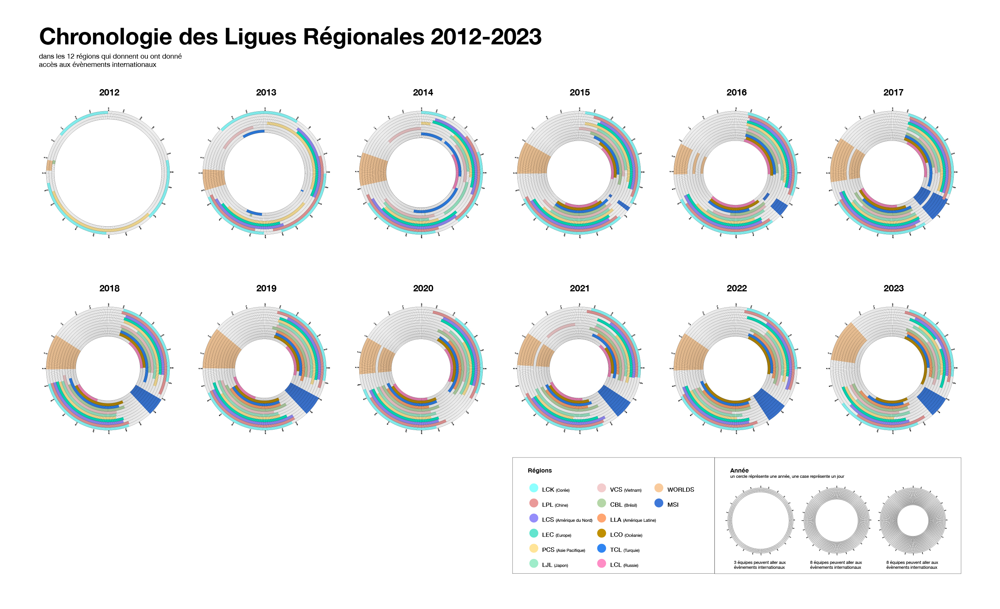
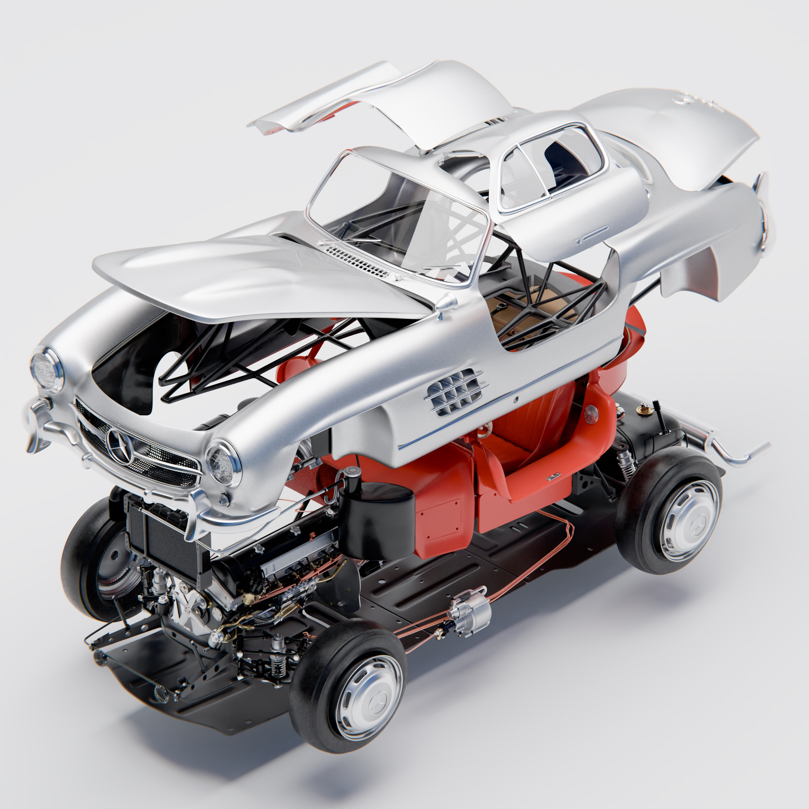
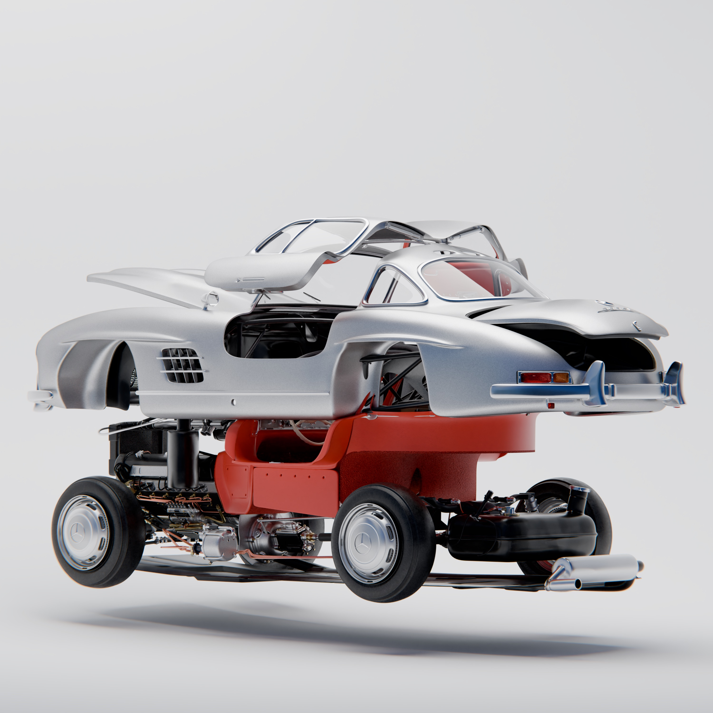
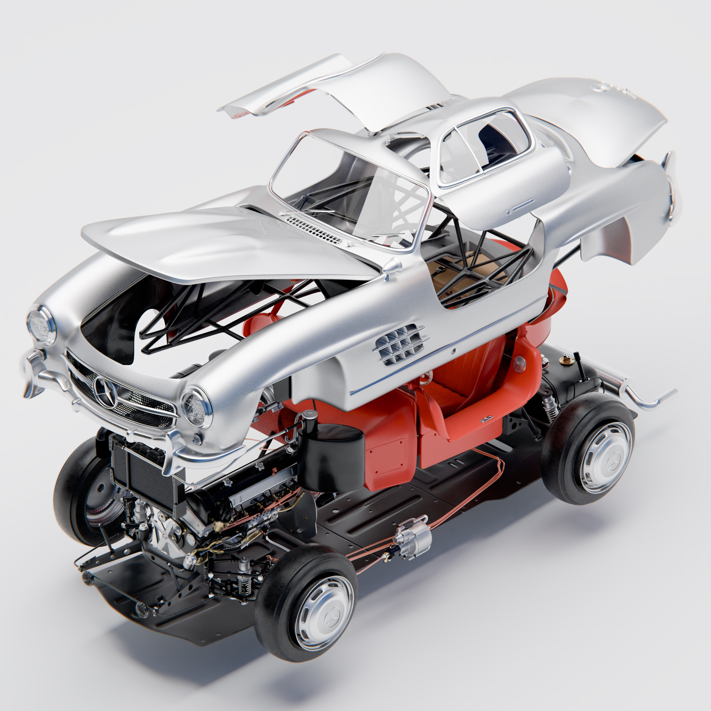
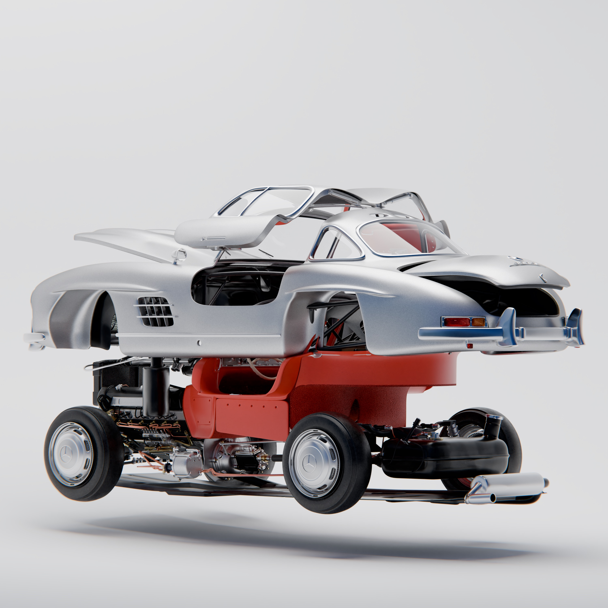
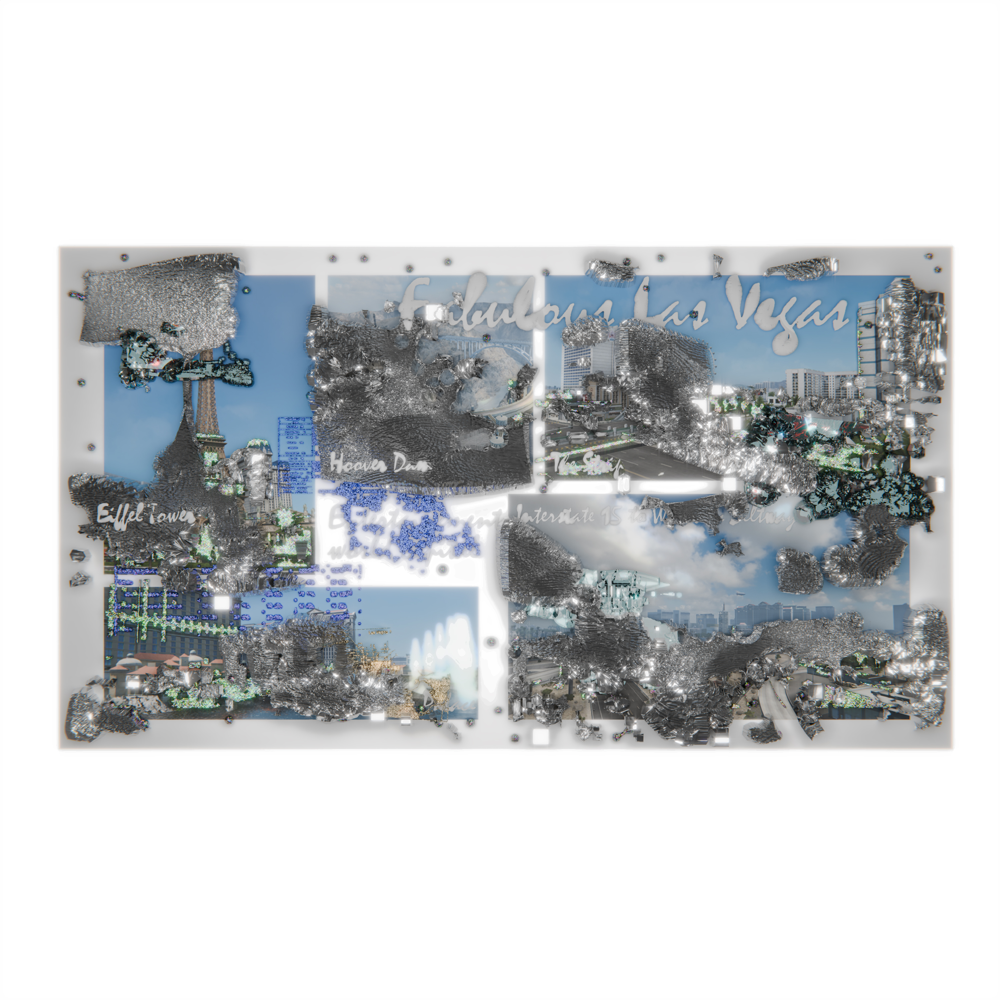
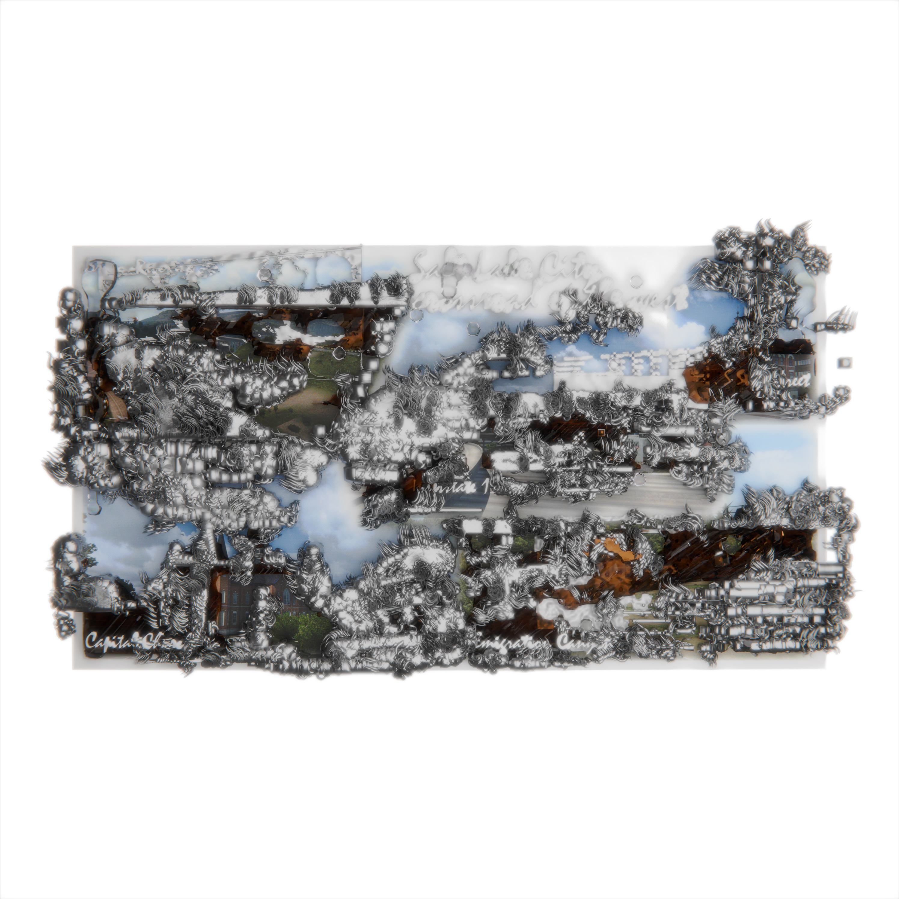
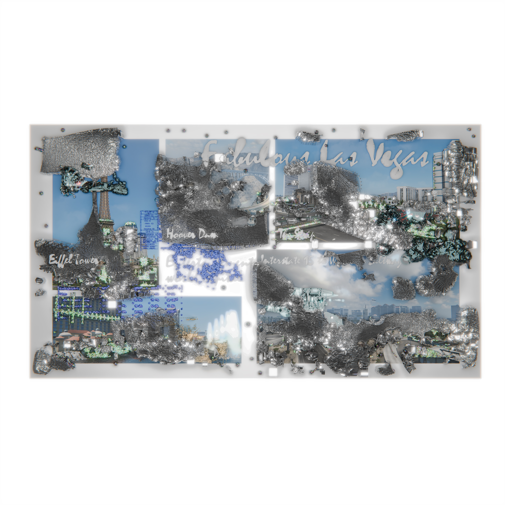
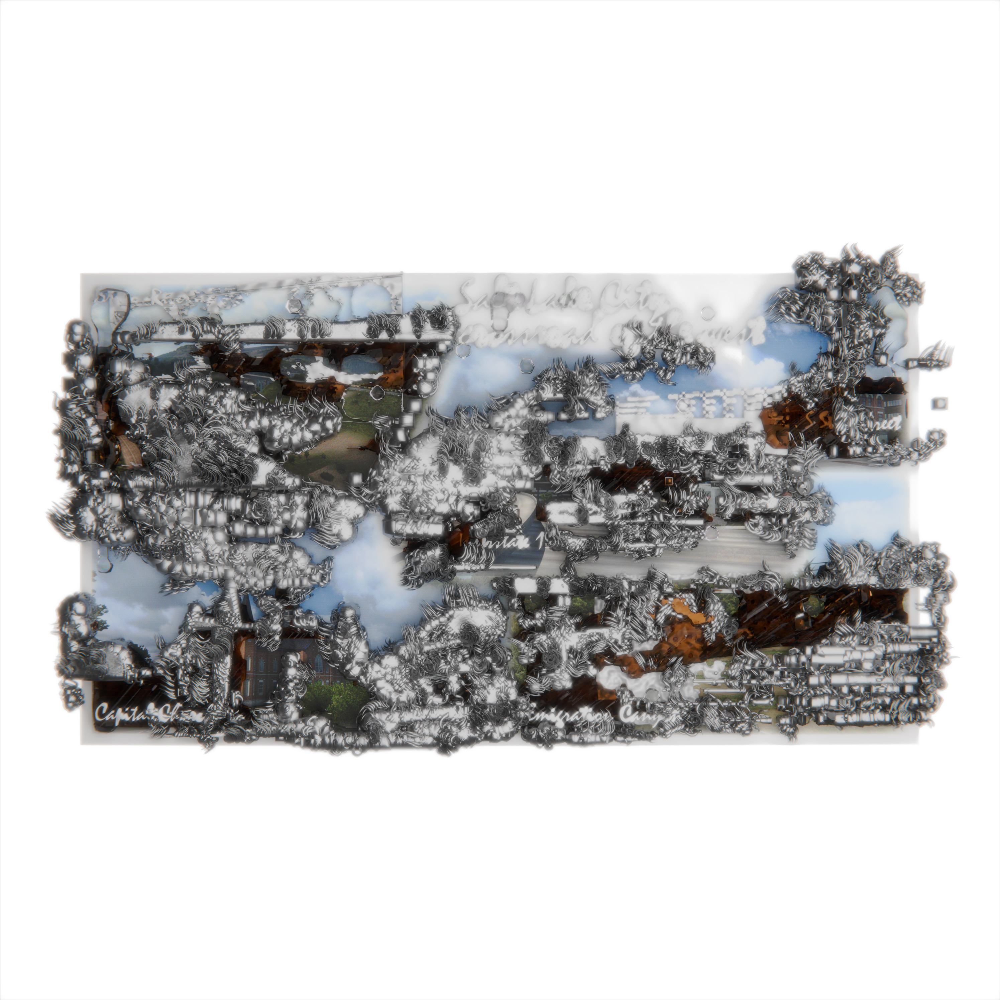

Filtre Spark AR modélisé en 3D. La couronne vertébrale est mon premier pas dans le monde de l’AR et du sculpt 3D. Elle détourne les os d’une colonne vertébrale pour en faire une parure. Cet objet virtuel s’inspire librement de prothèses chirurgicales et de coiffes du peuple Miao.


Expérimentations sur les classes d’objets en Java. D’abord réalisés sur Processing, certains visuels sont combinés et retravaillés sur Photoshop avec des modes de fusion. C’est une recherche qui s’inspire largement des structures des galaxies et du Human Connectome Project.
 

 



 


